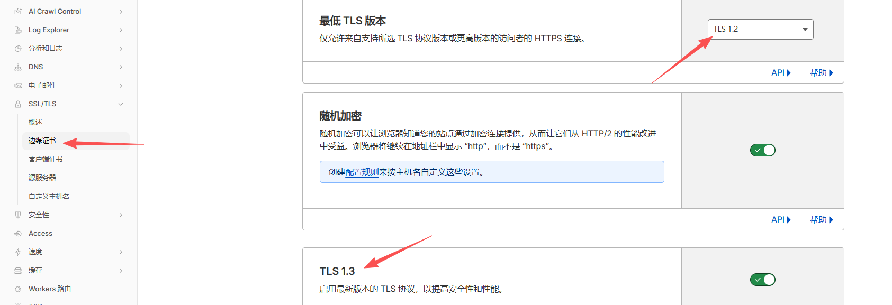
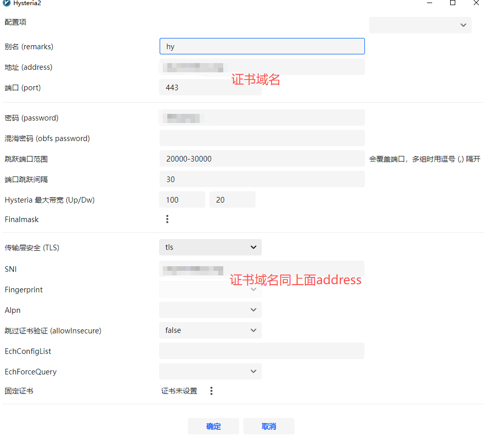
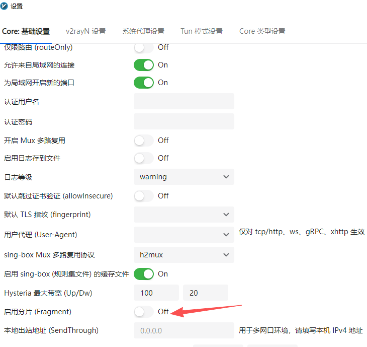
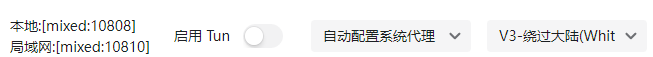
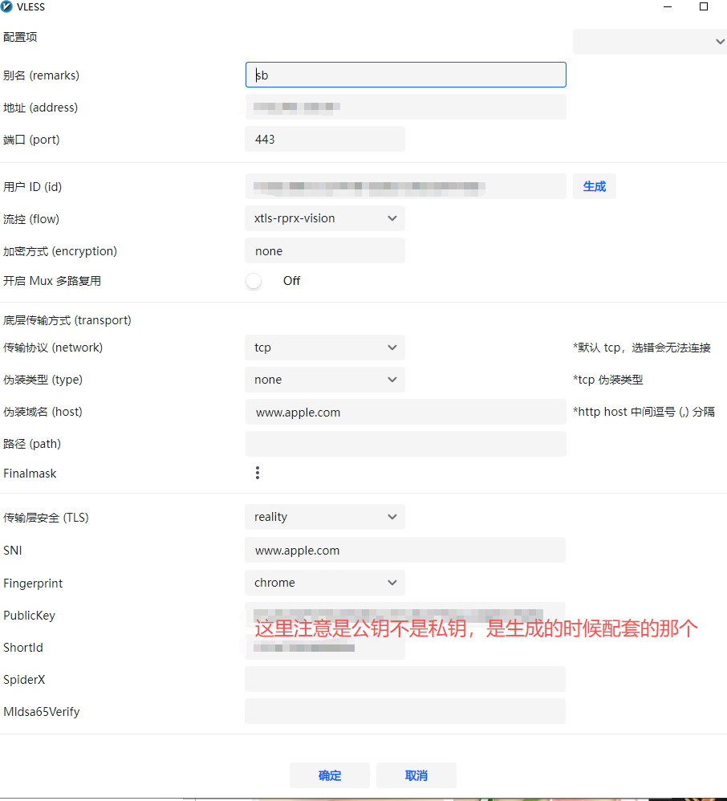

**VLESS + XHTTP + TLS + CDN**vs**VLESS + Reality + TLS**vs**Hysteria2**
上行cdn，下行reality，这里说的上行和下行是并非指我们常规理解的上传/下载速度，而是指数据包往返的路径（通道）选择。
- 上行 (Inbound/Upload Path)：指客户端 -> 服务器的请求。
- 这个阶段的核心任务是**“掩护”**。你需要让防火墙觉得你是在访问一个合法的网站。
- CDN 方案：由于流量先经过 Cloudflare 等大厂节点，防火墙看到的是你和合法的 CDN 节点在通信，隐蔽性极高。
- 下行 (Outbound/Download Path)：指服务器 -> 客户端的响应。
- 这个阶段的核心任务是**“速度”**。
- REALITY 方案：它是直连方案，不经过中转，因此没有 CDN 带来的高延迟和限速问题，能够跑满你的 VPS 带宽。
逻辑总结：这种“分流”做法是试图结合 CDN 的抗封锁性（上行隐藏）和 REALITY 的极速表现（下行直连）。
3 种方案对比表
| 特性 | VLESS + XHTTP + TLS + CDN | VLESS + Reality + TLS | Hysteria2 (UDP-based) |
|---|---|---|---|
| 核心传输 | HTTP 报文分段 (XHTTP) | TLS 握手借用 (Reality) | QUIC / UDP 暴力重传 |
| 伪装等级 | 极高（伪装成正常的 HTTP 请求） | 天花板（扫描者看到的是大厂官网） | 中（明显的 UDP 流量） |
| 抗封锁性 | 最强（CDN 隐藏 IP + HTTP 混淆） | 优秀（靠“像”真实网站逃避检测） | 一般（靠“变”和“快”硬刚） |
| 连接速度 | 较慢（CDN 转发有损耗） | 快（接近直连） | 极快（丢包环境下表现最佳） |
| 配置难度 | 复杂（需域名、证书、CDN 接入） | 中等（需配置 SNI 和短 ID） | 简单（通常只需密码和证书） |
| 主要用途 | IP 已被封或敏感期“续命” | 长期主力使用，防检测首选 | 垃圾线路或高峰期抢带宽神器 |
| 缺点 | 经过CDN中转，哪怕是优选ip，也经过多一道中转，游戏用户基本告别 | 不是最强，但也不是最差 | 容易被 QoS：部分省份的运营商对 UDP 流量极度反感，识别出大流量 UDP 会直接断流或限速。 特征明显：虽然有跳频和 Padding，但 UDP 协议本身在防火墙眼中就是“高危行为”。 |
虽然 CDN（内容分发网络）和 WARP（Cloudflare 提供的 VPN 服务）都出自 Cloudflare 这样的大厂，且都涉及 IP 跳转，但它们在网络链路中的位置和作用完全相反。
简单来说：CDN 保护的是“服务器”，而 WARP 保护的是“出口”。
核心区别对照表
| 特性 | CDN (如 Cloudflare CDN) | WARP (Cloudflare WARP) |
|---|---|---|
| 位置 | 位于 VPS 之前 (前置) | 位于 VPS 之后 (后置) |
| 主要目的 | 隐藏 VPS 真实 IP，防止 VPS 被封或被攻击 | 隐藏 VPS 原始出口，解锁流媒体或防止被封 |
| 保护对象 | 保护你的服务器不被防火墙发现 | 保护你的访问目标（如 Google/Netflix）不识别你 |
| 流量方向 | 客户端→CDN → VPS | VPS →WARP →目标网站 |
| 对速度影响 | 通常会增加延迟（需中转） | 几乎无损，甚至能优化 VPS 到目标的路由 |
另外CDN 的本质是中间人：目前绝大多数主流 CDN（如 Cloudflare 的免费版）主要针对 HTTP/TCP 流量进行加速和转发。而Hysteria2 的灵魂是 UDP：它之所以快，是因为它基于 QUIC 协议，不使用 TCP 那种死板的“确认-等待”机制。所以如果用Hysteria2 方案，就无法套cdn，不然就等于自废武功目前2026年4月20日还是Hysteria2 + 端口跳跃（物理躲避）
进阶玩法（上行VLESS + Reality；下行Hysteria2+warp）
可以在 v2rayN 中同时保留这两个节点：
- 作为主力的下行工具：使用你现在的 Hysteria2。设置 v2rayN 路由，将大流量域名（YouTube, Netflix）强制走这个节点。
- 作为主力的上行工具：使用 VLESS + Reality。将一些对稳定性要求极高的域名（如 GitHub, OpenAI, 银行后台）走这个节点。
通过 v2rayN 的路由功能实现按需分流。理论上应该可以，未实际验证。配置比较复杂……
实践vps手搓Hysteria2+端口跳跃+warp
需要域名（二级域名也行）1个，托管到cloudflare，dns解析vps的ip，关闭小云朵；ssl完全（严格）

ACME 自动化：建议使用 acme.sh 配合 DNS 验证自动更新证书，否则证书过期会导致连接瞬间中断。
操作步骤：
-
安装 acme.sh:
curl https://get.acme.sh | sh -
申请证书（以 Cloudflare DNS 为例）:
export CF_Email="你的邮箱" export CF_Key="你的API密钥" ~/.acme.sh/acme.sh --issue --dns dns_cf -d 你的域名 -
安装证书到 Hysteria 目录：
~/.acme.sh/acme.sh --install-cert -d 你的域名 \ --key-file /etc/hysteria/private.key \ --fullchain-file /etc/hysteria/fullchain.cer \ --reloadcmd "systemctl restart hysteria2"这样每当证书更新，Hysteria 都会自动重启加载新证书。
安装hy2脚本
<(curl -fsSL https://get.hy2.sh/)
配置文件 (/etc/hysteria/config.yaml)：
listen: :443
tls:
cert: /etc/hysteria/fullchain.cer
key: /etc/hysteria/private.key
auth:
type: password
password: "密码"
masquerade:
type: proxy
proxy:
url: https://www.ucla.edu
rewriteHost: true
quic:
initStreamReceiveWindow: 8388608
initConnReceiveWindow: 20971520
hopInterval: 30s
ignoreClientBandwidth: true
outbounds:
- name: warp
type: socks5
socks5:
addr: 127.0.0.1:40000
acl:
inline:
- direct(geoip:private)
- direct(geoip:cn)
- direct(geosite:cn)
- warp(all)
启动 Hy2：
systemctl enable hysteria-server.service
systemctl restart hysteria-server.service
检查状态：
systemctl status hysteria-server.service
如果显示 active (running)，说明配置成功。
客户端 v2rayN 配置对齐
Hy2 官方版在 v2rayN 中的配置非常简单：
-
服务器类型：选择 Hysteria2。
-
地址/端口：你的域名 / 443。
-
认证：填写你在
password处设置的密码。 -
TLS/SNI：开启 TLS，SNI 填写你的域名。
-
重要（带宽优化）： 在客户端设置里找到
Upstream/Downstream（上行/下行）：- Down (下行): 填写
100 Mbps（根据你 VPS 的标称带宽填）。 - Up (上行): 填写
20 Mbps。
原理：Hysteria2 会根据这两个数值主动控制发包节奏。填入合理的数值可以有效防止运营商对 UDP 流量进行惩罚性限速。
- Down (下行): 填写


记得关闭分片，hy2不用这个；路由模式默认下面这样即可

安装warp
获取 WARP 账号的关键参数
你需要获取四个核心参数：PrivateKey、Address (v4和v6)、Reserved 值以及 PublicKey。
目前最简单且推荐的方法是使用自动化脚本生成。在你的 VPS 上执行以下命令（选择其中一种即可）：
方法 A：使用单行脚本（推荐）
wget -N https://gitlab.com/fscarmen/warp/-/raw/main/api.sh && api.sh
- 运行后按照提示选择“注册账号”。
- 脚本会直接输出包含
private_key和reserved(通常是三个数字，如[123, 45, 67]) 的信息。 - 注意：
Reserved值非常关键，如果填错，你的流量可能无法被 Cloudflare 正确识别。
运行脚本：wget -N https://gitlab.com/fscarmen/warp/-/raw/main/menu.sh && menu.sh
选择模式：选择 “为已有的 WireGuard 客户端添加 ” 或者 “安装 WARP Go”。
分流设置：选 “Socks5 代理模式”，端口设为 40000。
IP 选择：选 “双栈”。
手动开启端口转发（确保客户端能连上）
直接在终端执行这两行，这不需要安装任何包，立即生效：
# 核心：将 20000-30000 的流量转发到 443 端口
iptables -t nat -A PREROUTING -p udp --dport 20000:30000 -j REDIRECT --to-ports 443
# 放行 443 端口
iptables -I INPUT -p udp --dport 443 -j ACCEPT
#老debian10可能需要更换源才能安装下面的
sed -i 's/deb.debian.org/archive.debian.org/g' /etc/apt/sources.list
sed -i 's/security.debian.org/archive.debian.org/g' /etc/apt/sources.list
sed -i '/stretch-updates/d' /etc/apt/sources.list
apt update && apt install iptables-persistent -y
netfilter-persistent save
iptables -t nat -L PREROUTING -n -v --line-numbers #检查是否成功
系统内核优化 (Debian/Linux)
既然你在 Debian 环境下运行，务必开启 BBR 以及优化 UDP 缓冲区，否则 Hysteria 的性能会受限于系统底层。
在 /etc/sysctl.conf 中添加：
# 开启 BBR
net.core.default_qdisc = fq
net.ipv4.tcp_congestion_control = bbr
# 增加 UDP 缓冲区大小，防止高并发时丢包
net.core.rmem_max = 16777216
net.core.wmem_max = 16777216
执行 sysctl -p 生效。
配置好之后客户端进行网页检测（最直观）
在连接节点的状态下，打开浏览器访问 Cloudflare 官方的调试界面： 👉 https://www.cloudflare.com/cdn-cgi/trace
ip=cloudflare的ip
warp=on
表示成功
删除hy2，电信网对udp宽容点，广电网udp被封太严重了，实际测试下来速度非常慢！
systemctl stop hysteria-server.service
systemctl disable hysteria-server.service
rm -f /usr/local/bin/hysteria
rm -rf /etc/hysteria
rm -f /etc/systemd/system/hysteria2.service
systemctl daemon-reload
iptables -t nat -D PREROUTING -p udp --dport 20000:30000 -j REDIRECT --to-ports 443
iptables -D INPUT -p udp --dport 443 -j ACCEPT
netfilter-persistent save
改用VLESS + Reality + 内置 WARP方案
1，vps端内核确定
| 特性 | Xray-core | Sing-box |
|---|---|---|
| Reality 兼容性 | 原生首发，最稳定 | 完美支持 |
| WARP 集成方式 | 通过 Outbound 配合 Wireguard 二进制 | 原生内置 Wireguard 模块，效率更高 |
| 历史 | 老 | 新 |
| 资源消耗 | 较低 | 极低 |
| 分流灵活性 | 优秀 | 极致（支持脚本化逻辑） |
综上所述，vps端决定采用singbox内核，注意vps端和客户端是不同的，客户端用v2rayn的xray内核就行了
2，安装singbox
https://sing-box.sagernet.org/installation/package-manager/
官方说明文档
curl -fsSL https://sing-box.app/install.sh | sh
安装完成后，配置文件路径通常为：/etc/sing-box/config.json
第二步：生成必备密钥
Reality 需要一对 椭圆曲线公私钥。
# 生成 Reality 密钥对
sing-box generate reality-keypair
# 它会输出 Private Key (私钥) 和 Public Key (公钥)
# 另外生成一个 UUID 作为用户 ID
sing-box generate uuid
# 生成一个 Short ID（16位十六进制，如 62eb1d...）
sing-box generate rand --hex 8
请记录下这四个值，下面的config填入配置。
第三步：编写配置文件
清空 /etc/sing-box/config.json，参考以下模板进行修改。
{
"log": {
"level": "warn",
"timestamp": true
},
"dns": {
"servers": [
{
"tag": "dns-warp",
"type": "https",
"server": "1.1.1.1",
"server_port": 443,
"tls": {
"enabled": true,
"server_name": "cloudflare-dns.com"
},
"detour": "warp-out"
},
{
"tag": "dns-direct",
"type": "udp",
"server": "8.8.8.8",
"server_port": 53
}
],
"rules": [
{
"rule_set": "geosite-cn",
"action": "route",
"server": "dns-direct"
}
],
"final": "dns-warp"
},
"endpoints": [
{
"type": "wireguard",
"tag": "warp-out",
"address": [
"172.16.0.2/32",
"warp获取到的那个ipv6地址/128"
],
"private_key": "用warp那个 api.sh -r生成的那个同上面hy2",
"mtu": 1280,
"peers": [
{
"address": "162.159.192.1",
"port": 2408,
"public_key": "bmXOC+F1FxEMF9dyiK2H5/1SUtzH0JuVo51h2wPfgyo=",
"allowed_ips": [
"0.0.0.0/0",
"::/0"
],
"reserved": [warp的那个]
}
],
"domain_resolver": "dns-direct"
}
],
"inbounds": [
{
"type": "vless",
"tag": "vless-in",
"listen": "::",
"listen_port": 443,
"users": [
{
"uuid": "获取到的那个uuid",
"flow": "xtls-rprx-vision"
}
],
"tls": {
"enabled": true,
"server_name": "www.apple.com",
"reality": {
"enabled": true,
"handshake": {
"server": "www.apple.com",
"server_port": 443
},
"private_key": "sing-box generate reality-keypair生成的那个",
"short_id": [
"sing-box generate rand --hex 8生成的那个"
]
}
}
}
],
"outbounds": [
{
"type": "direct",
"tag": "direct"
},
{
"type": "block",
"tag": "block"
}
],
"route": {
"rule_set": [
{
"tag": "geoip-cn",
"type": "remote",
"format": "binary",
"url": "https://raw.githubusercontent.com/SagerNet/sing-geoip/rule-set/geoip-cn.srs",
"download_detour": "direct"
},
{
"tag": "geosite-cn",
"type": "remote",
"format": "binary",
"url": "https://raw.githubusercontent.com/SagerNet/sing-geosite/rule-set/geosite-cn.srs",
"download_detour": "direct"
}
],
"rules": [
{
"ip_is_private": true,
"action": "route",
"outbound": "block"
},
{
"rule_set": ["geoip-cn", "geosite-cn"],
"action": "route",
"outbound": "direct"
}
],
"final": "warp-out",
"default_domain_resolver": "dns-direct",
"auto_detect_interface": true
}
}
第四步：启动与检查
- 验证配置语法：
sing-box check -c /etc/sing-box/config.json - 启动服务：
systemctl enable --now sing-box - 查看状态：
systemctl status sing-box
如果后续有修改配置，修改完后
systemctl restart sing-box
第五步：客户端v2rayn添加节点
1. 基础信息填写
打开 v2rayN，点击 “服务器” -> “添加 [VLESS] 服务器”：
- 别名：自定义（例如：Racknerd-Reality）
- 地址 (Address)：填入你 VPS 的 IP 地址
- 端口 (Port)：
443（需与服务端 inbound 端口一致） - 用户 ID (UUID)：填入你在
config.json中配置的那个 UUID - 流控 (flow)：选择
xtls-rprx-vision（这是 Reality 的标配）
2. 传输层与 Reality 关键配置
这是最核心的部分，请切换到下方的 “传输设置 (Transport)” 栏目：
- 传输协议：选择
tcp - 伪装类型：选择
none - 底层传输安全 (Stream Security)：必须选择
reality
此时会弹出 Reality 的专用输入框：
-
SNI (Server Name)：填入你服务端配置的域名（如
www.microsoft.com） -
Fingerprint (指纹)：建议选择
chrome -
PublicKey (公钥)：填入你服务端
private_key对应的public_key（注意：不是私钥，是配套生成的公钥） -
ShortId：填入服务端
short_id列表中的其中一个（例如你的ShortID） -
SpiderX：留空即可

v2rayN 节点编辑界面的以下设置：
| 设置项 | 建议值 | 原因 |
|---|---|---|
| 流控 (Flow) | xtls-rprx-vision |
必须开启，Reality 的核心安全特性 |
| Mux 多路复用 | 关闭 / 不勾选 |
避免干扰 Vision 流控，提高隐蔽性 |
| 分片 (Fragment) | 关闭 |
Reality 已足够隐蔽，无需额外干扰 |
| 跳过证书验证 | false (不勾选) |
Reality 不需要跳过验证，保持安全 |
第六步：优化
1. 开启 BBR 加速 (必做)
BBR 是 Google 开发的拥塞控制算法，能显著提升高延迟、丢包环境下的带宽利用率。这个同hy2上面的配置
2. 优化系统文件句柄限制
在高并发连接时，Linux 默认的限制可能会导致掉线。
-
编辑文件：
nano /etc/security/limits.conf -
在末尾添加：
* soft nofile 51200 * hard nofile 51200
3. 检查系统时间同步
Reality 协议对时间非常敏感，时间偏移超过 30 秒可能导致连接失败。
timedatectl set-ntp true
date # 确认时间是否与当前北京时间一致（UTC+8）